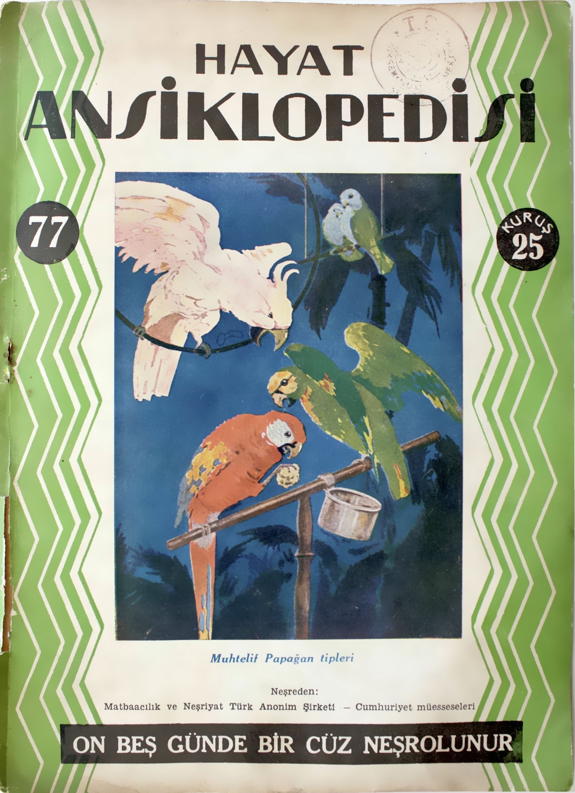

About the project
Welcome to my digitization project, carried out as part of the Digitizing Cultural Heritage Materials (DCHM) course at the University of Borås. I aimed to preserve a Turkish periodical encyclopedia, published biweekly between 1932 and 1936, by digitizing it for future generations.
The particular encyclopedia I chose has significant cultural value in the context of the early republican period in Turkey. It was the first comprehensive general encyclopedia published in the new Turkish alphabet of that era and aimed to serve as an essential publication for the society in the aftermath of the foundation of a young republic.
Although Hayat Ansiklopedisi was also published in volumes, I focused on digitizing a sample from the periodical edition that included pictures. I found this issue, together with five others, on the dusty shelves of a vintage bookstore in one of the most historical neighborhoods of Istanbul, and I brought it all the way to Sweden to begin my digitization process.
I view this project as the start of a long-term effort, and I plan to continue digitizing the remaining pages of the current issue. I hope that by digitizing this cultural heritage material, I can make it accessible to a broader audience and preserve it for future generations to come.